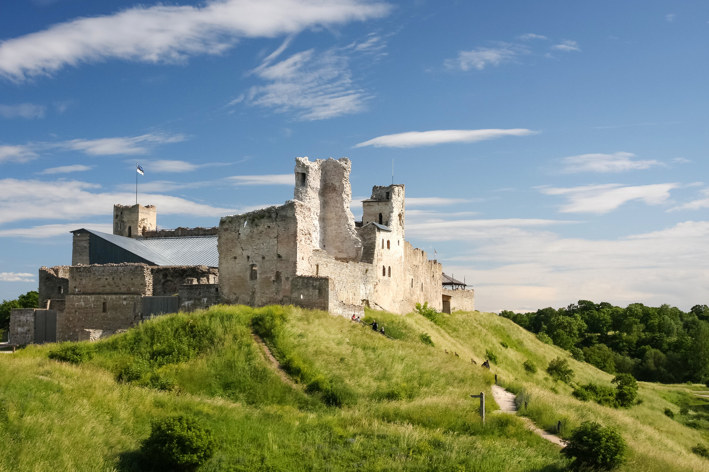

¿Donde ir en Estonia?
- Tallin
Sin lugar a dudas el primer lugar a visitar en Estonia es su capital Tallin,es uno de los centros urbanos
medievales mejor conservados del mundo y fue el hogar de ricos comerciantes de Dinamarca y
Alemania en el siglo XIII. El casco antiguo, con sus calles empedradas e iglesias medievales, se convirtió en Patrimonio de la Humanidad por la UNESCO en 1997.Vea el arte y los arcos góticos en el Ayuntamiento
de Tallin, luego pasee por el resto del casco antiguo, eche un vistazo a las iglesias, la catedral ortodoxa rusa y la vista digna de una postal desde la plataforma Patkuli. Hacer turismo aquí se siente como viajar en el tiempo. - Tartu

La ciudad de Tartu es considerada el centro intelectual del país, gracias a la impresionante y conocida Universidad de Tartu. Entre la universidad y el hecho de que Tartu es la ciudad más antigua de la nación, esta ciudad es claramente un destino interesante. Su atractivo centro está bordeado de edificios de diseño clásico del siglo XVIII, muchos de los cuales han sido utilizados para usos innovadores. Una de las atracciones más geniales de Tartu es el barrio de la sopa. En el barrio de las sopas, cada calle lleva el nombre de los ingredientes de la sopa, como papas, frijoles y guisantes. Viejas casas de madera bordean estas calles, que están justo al lado del río Emajõgi.
- Parque nacional de Lahemaa
Uno de los parques nacionales más populares de Estonia es Lahemaa. Dado que está a solo una hora en auto de la capital, es el viaje de un día ideal. Viru Raba, o Viru Bog, es una parte imperdible del parque. Los árboles sobresalen del suelo pantanoso, y existe una clara calidad etérea. Para facilitar la exploración de Viru Bog, hay un paseo marítimo de 5 km que generalmente está seco, lo que lo mantiene fuera del agua pero lo suficientemente cerca como para admirar el paisaje. En el centro del parque se encuentra Sagadi Village, un lugar fascinante donde puede recorrer Sagadi Manor y aprender más sobre la cultura y la historia de la región.
- Parnu

Ubicado perfectamente en el borde de su pequeña entrada costera en el Golfo de Riga, Parnu se completa con uno de los mejores tramos de arena blanca nacarada del Báltico. Está respaldado por el totalmente nuevo e indeleblemente animado Beach Promenade, donde las fuentes balbucean junto a los restaurantes al aire libre y los cursos de una excelente pista para bicicletas. Y en el centro de la ciudad, los restos de un boom Art Deco en los años 20 añaden un toque de clase al complejo, los spas se levantan inesperadamente en las esquinas de las calles, la calle Ruutli suena con una melodía nocturna y encantadoras villas de madera. salpican las afueras.
- Lennusadam
Muy interesante por la exhibición y por los elementos interactivos que tienen disponibles para todas las edades. Se puede visitar por dentro un submarino, y conocer la historia de diversos veleros y máquinas de guerra de la época. Además, afuera del museo hay una exhibición de barcos reales a los cuales se puede subir. Este galardonado museo en Tallin alberga alrededor de 200 artefactos y embarcaciones marítimas auténticas en un histórico hangar de hidroaviones, que cuenta con la primera cúpula de hormigón de alto volumen, sin columnas y de capa fina. Esta atracción incluye un submarino de la década de 1930, un rompehielos a vapor de 100 años y los restos del barco más antiguo de Estonia en la colección permanente del museo. También puedes probar un uniforme azul marino para una foto de recuerdo y aprender el arte de doblar aviones de papel. Una variedad de simuladores interactivos ofrece a los huéspedes una experiencia aún más inmersiva, mostrándoles cómo es volar un avión.
- Museo Nacional de Estonia

El Museo Nacional de Estonia es igualmente famoso por sus fascinantes exhibiciones permanentes sobre la historia y la cultura de Estonia, así como por su arquitectura deslumbrante. El edificio, una obra de arte conceptual abierta en una antigua base militar soviética en 2016, fue diseñado para parecerse a un campo de aviación que despegaba al espacio. Por la noche, la iluminación lo convierte en una vista especialmente impresionante. Date al menos medio día para explorar los tesoros dentro del museo. La exposición permanente principal, “Encounters”, permite a los turistas echar un vistazo a la vida de los estonios comunes y su cultura desde la Edad de Hielo hasta la actualidad. “Eco de los Urales”, la otra exposición permanente en este museo, se centra en los pueblos ugrofineses. Incluye una impresionante exhibición de ropa cultural y herramientas diarias, como utensilios de cocina. Las instalaciones de alta tecnología en todo el museo hacen que la experiencia sea aún más interactiva.
- Castillo de Narva

La ciudad de Narva es el destino más oriental del país, sin mencionar toda la Unión Europea. La ciudad fue fuertemente bombardeada durante la Segunda Guerra Mundial, pero afortunadamente el hermoso e histórico Castillo de Narva sigue en pie. El castillo, que también se conoce como Hermann Castle, fue construido en el siglo XIII, pero los daneses son la residencia del viceregente del rey danés. Dentro del castillo se encuentra el Museo Narva, así como una colección de talleres de artesanías donde puedes ver e incluso aprender las habilidades utilizadas en la época medieval. La torre del castillo domina el castillo de Ivangorod en el lado ruso del río.
- Parque Nacional de Matsalu

El Parque Nacional de Matsalu es una reserva natural y parque nacional ubicado en el condado de Lääne. Matsalu es uno de los más grandes e importantes puntos de parada en otoño para las aves migratorias de Europa.
- Otepää

En los meses más cálidos del año, Otepaa atrae a modestas multitudes de excursionistas y ciclistas de montaña a los sinuosos senderos del condado de Valga, para pasear por los espesos bosques de abetos y caminar a orillas del lago Puhajarve. Sin embargo, es cuando llega la nieve que esta autoproclamada capital invernal de Estonia realmente da un paso adelante. Las pistas de esquí nórdico se adentran en el bosque, los saltos de esquí rugen con vítores locales y las diversas pistas alpinas ofrecen una variedad de pistas para principiantes e intermedias. Además de la acción al aire libre, Otepaa también cuenta con una hermosa torre de la iglesia y los restos desmoronados de una ciudadela envejecida para los amantes de la historia.
- Rakvere Castle

El norte de Estonia es el hogar de Rakvere, una ciudad donde los humanos han vivido durante casi 1,500 años. Las mayores atracciones de la ciudad son el castillo de Rakvere, construido en el siglo XVI. El castillo se ha convertido en una especie de parque temático medieval, y los visitantes disfrazados y el personal deambulan por los jardines. Puedes ver a los caballeros pulir su armadura, ver el taller de un alquimista y recorrer la antigua bodega. En la taberna Shenkenberg del castillo, incluso puedes cenar platos clásicos medievales. Visitar el castillo es una forma inolvidable de dar vida a la historia.